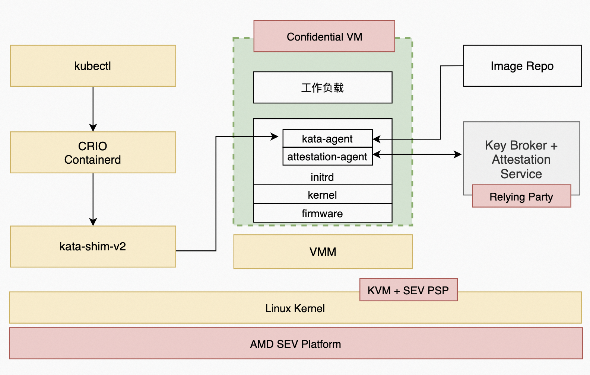

AMD SEV机密容器
本文主要为您介绍如何基于AMD安全加密虚拟化功能SEV(AMD Secure Encrypted Virtualization)技术，通过远程证明启动一个租户的加密容器镜像。
前提条件
1. 安装Anolis 8.6 操作系统
请在支持AMD CPU的硬件设备上，参考Anolis 8.6 GA说明文档安装anolis 8.6 GA。
2. 升级内核到5.10
由于 Anlois 8.6 的默认内核版本是4.19，请升级kernel 到5.10版本。
- 添加 yum 源配置参数，添加Anolis 的 Experimental repo。
yum install yum-utils
yum-config-manager --add-repo https://mirrors.openanolis.cn/anolis/8/kernel-5.10/x86_64/os/
- 升级内核
yum update kernel
- 重启机器，并重新查看机器的操作系统发行编号。
reboot
uname -r
- 预期结果如下：
5.10.134-13_rc2.an8.x86_64
3. 使能SEV
注意：在 Anolis 8.6 中，grub 版本默认为1:2.02-123.0.2.an8_6.8。此版本存在BUG，如果直接进行使能sev的操作，会导致机器重启后无法进入系统的情况。请采用降级grub的workround方法。
- 修改 yum 源，在 Anolis 8.5 中才有低版本的 grub。
cd /etc/yum.repos.d
sed -i 's/$releasever/8.5/' AnolisOS-BaseOS.repo
- 降级 grub。
yum downgrade grub2-efi
- 查看 grub 的版本，预期结果如下：
# yum list | grep grub
grub2-common.noarch 1:2.02-106.0.1.an8 @BaseOS
grub2-efi-x64.x86_64 1:2.02-106.0.1.an8 @BaseOS
grub2-pc.x86_64 1:2.02-106.0.1.an8 @BaseOS
grub2-pc-modules.noarch 1:2.02-106.0.1.an8 @BaseOS
grub2-tools.x86_64 1:2.02-106.0.1.an8 @BaseOS
grub2-tools-efi.x86_64 1:2.02-106.0.1.an8 @BaseOS
grub2-tools-extra.x86_64 1:2.02-106.0.1.an8 @BaseOS
grub2-tools-minimal.x86_64 1:2.02-106.0.1.an8 @BaseOS
使能SEV和SME
默认情况下SEV和SME没有使能，请输入以下内核命令行进行使能：
grubby --update-kernel=ALL --args="mem_encrypt=on kvm_amd.sev=1"
重启机器。
reboot
重启后，请检查机器的sev使能状态。
dmesg | grep -i sev
预期结果如下：
[ 6.747923] ccp 0000:4b:00.1: sev enabled
[ 6.842676] ccp 0000:4b:00.1: SEV firmware update successful
[ 6.997400] ccp 0000:4b:00.1: SEV API:1.42 build:42
[ 7.522437] SEV supported: 255 ASIDs
最后检查 SME(Secure Memory Encryption) 的状态。
dmesg | grep -i sme
预期结果如下：
[ 1.863927] AMD Memory Encryption Features active: SME
背景信息

AMD SEV Pod 级机密容器架构基于 Kata Containers 项目，最大区别是将基于普通虚拟化技术实现的轻量级 Sandbox Pod替换为基于机密计算技术实现的轻量级 TEE Pod，目的是将特定租户的整个 Pod 以及其中的容器运行在受 CPU TEE 保护的执行环境中。除此之外，TEE Pod 内部还额外集成了 image-rs 和 attestation-agent 等组件，它们负责实现容器镜像的拉取、授权、验签、解密、远程证明以及秘密注入等安全特性。 机密容器的基本运行过程为：
- 用户使用标准工具制作一个签名和/或加密的受保护的容器镜像，并上传到容器镜像仓库中。
- 用户命令 Kubernetes 启动这个受保护的容器镜像。kubelet 会向 containerd 发起创建 Pod 的 CRI 请求，containerd 则把请求转发给 kata-runtime。
- kata runtime 与 Key broker service（simple kbs）建立安全会话，并进行基于CPU TEE 硬件的身份认证与授权。KBS基于安全可信信道发送敏感数据给kata runtime。kata runtime 调用QEMU 将秘密信息注入到guest userland中。之后再调用 QEMU 启动 Pod。
- CPU TEE 执行初始化，最终启动 kata-agent 监听后续请求。
- kubelet 向 containerd 发起 Image Pulling 的 CRI 请求，containerd 则把请求转发给 kata-runtime，最终 kata-agent 收到请求并通过 image-rs 子模块提供的容器镜像管理功能，在 TEE 内安全地执行拉取、验签、解密、unpack 以及挂载容器镜像的操作。
步骤一：部署测试集群
本步骤为您提供快速部署单节点测试集群的步骤。您可以根据您的需求，灵活部署集群。
配置权限
关闭firewall
Linux系统下面自带了防火墙 iptables ，iptables 可以设置很多安全规则。但是如果配置错误很容易导致各种网络问题。此处建议关闭 firewall 。 执行如下操作：
sudo service firewalld stop
检查 firewall 状态：
service firewalld status
预期结果如下：
Redirecting to /bin/systemctl status firewalld.service
● firewalld.service - firewalld - dynamic firewall daemon
Loaded: loaded (/usr/lib/systemd/system/firewalld.service; disabled; vendor preset: enabled)
Active: inactive (dead)
Docs: man:firewalld(1)
关闭selinux
Security-Enhanced Linux（SELinux）是一个在内核中实施的强制访问控制（MAC）安全性机制。为避免出现权限控制导致的虚拟机启动、访问失败等问题，此处建议关闭selinux。执行如下操作：
setenforce 0
预期结果如下：
setenforce: SELinux is disabled
安装operator-sdk
operator SDK 项目是 Operator Framework 的一个组件，Operator Framework 是一个开源工具包，用于以有效、自动化和可扩展的方式管理 Kubernetes 原生应用程序，称为 Operators。具体信息，请参考operator SDK。
wget -O /usr/local/bin/operator-sdk https://github.com/operator-framework/operator-sdk/releases/download/v1.23.0/operator-sdk_linux_amd64
sudo chmod +x /usr/local/bin/operator-sdk
启动本地 docker registry
- 请执行下列脚本安装 docker。
yum-config-manager --add-repo https://download.docker.com/linux/centos/docker-ce.repo
yum install -y containerd.io docker-ce docker-ce-cli
systemctl start docker.service
- 执行如下命令，启动本地 docker registry，该registry 用于存储operator images。
docker run -itd -p 5000:5000 docker.io/library/registry:latest
检查 docker 容器是否启动成功：
docker ps
预期结果如下，注意，状态（STATUS）应该是Up的。
CONTAINER ID IMAGE COMMAND CREATED STATUS PORTS NAMES
a7cc49ee1d19 registry:latest "/entrypoint.sh /etc…" 38 minutes ago Up 38 minutes 0.0.0.0:5000->5000/tcp, :::5000->5000/tcp nostalgic_montalcini
配置containerd
自动生成默认的config.toml
containerd config default > /etc/containerd/config.toml
由于默认的 config.toml 使用的是国外的镜像，国内有可能无法访问。请参考以下命令修改为国内镜像。
cd /etc/containerd
sed -i 's#registry.k8s.io/pause:3.6#registry.cn-hangzhou.aliyuncs.com/google_containers/pause:3.1#g' config.toml
启动 containerd
systemctl containerd start
部署单节点的Kubernetes cluster
- 请参考kubernetes官方指南安装Kubernetes cluster。最低 Kubernetes 版本应为 1.24。
- 确保集群中至少有一个 Kubernetes 节点具有标签 node-role.kubernetes.io/worker=
kubectl label node <node-name> node-role.kubernetes.io/worker=
步骤二：安装Confidential computing Operator
Confidential computing Operator 提供了一种在 Kubernetes 集群上部署和管理 Confidential Containers Runtime 的方法。具体信息请参考指南。
前提条件
- 确保 Kubernetes 集群节点至少有 8GB RAM 和 4 个 vCPU
- 当前 CoCo 版本仅支持基于 containerd 运行时的 Kubernetes 集群
- 确保 SELinux 被禁用或未强制执行 (confidential-containers/operator#115)
部署Operator
Operator目前有3个版本，这里默认安装最新版v0.3.0版本。 通过运行以下命令部署Operator：
kubectl apply -k github.com/confidential-containers/operator/config/release?ref=v0.3.0
cc-operator-controller-manager 资源依赖国外的镜像，可能拉不下来，请参考以下步骤对镜像进行修改：
kubectl edit deploy cc-operator-controller-manager -n confidential-containers-system
# 将gcr.io/kubebuilder/kube-rbac-proxy:v0.13.0替换成
image: quay.io/brancz/kube-rbac-proxy:v0.13.0
查看节点状态：
kubectl get pods -n confidential-containers-system --watch
预期结果如下。注意这三个pod都要存在，且STATUS都要为Running。
NAME READY STATUS RESTARTS AGE
cc-operator-controller-manager-56cb4d5ff5-lqd9x 2/2 Running 0 167m
cc-operator-daemon-install-rg8s9 1/1 Running 0 154m
cc-operator-pre-install-daemon-7jhnw 1/1 Running 0 154m
创建custom resource
创建 custom resource 会将所需的 CC runtime安装到集群节点中并创建 RuntimeClasses。操作如下：
kubectl apply -k github.com/confidential-containers/operator/config/samples/ccruntime/default?ref=v0.3.0
检查创建的 RuntimeClasses。
kubectl get runtimeclass
预期结果如下：
NAME HANDLER AGE
kata kata 154m
kata-clh kata-clh 154m
kata-clh-tdx kata-clh-tdx 154m
kata-qemu kata-qemu 154m
kata-qemu-sev kata-qemu-sev 154m
kata-qemu-tdx kata-qemu-tdx 154m
卸载Operator（非必要步骤）
如果您想更新Operator的版本，或者您的安装出现问题，可以先卸载，再回到上面的步骤重新安装。具体操作请参考链接。
kubectl delete -k github.com/confidential-containers/operator/config/samples/ccruntime/default?ref=<RELEASE_VERSION>
kubectl delete -k github.com/confidential-containers/operator/config/release?ref=${RELEASE_VERSION}
步骤三：启动Simple KBS
simple kbs是一个密钥代理服务，可以存储并向 workload 提供 secret 。对于 SEV 加密容器示例来说，需要从simple kbs 中获取 secret ，并用于解密已加密的容器。 在步骤四的示例二中，本文提供了一个简单的加密镜像( docker.io/haosanzi/busybox-v1:encrypted )，该镜像使用 simple kbs 已经存在的密钥来解密，同时对 policy 不进行校验。此加密镜像只作为测试使用，如您想用于自己的生产用例中，请参考指南制作一个新的加密镜像并部署。
要了解有关创建 policy 的更多信息，请参考指南。
- 安装 docker-compose 后，才能在 docker 容器中运行 simple-kbs 及其数据库，数据库中存放了 secret 等信息：
dnf install docker-compose-plugin
- 下载 simple-kbs 的代码：
simple_kbs_tag="0.1.1"
git clone https://github.com/confidential-containers/simple-kbs.git
cd simple-kbs && git checkout -b "branch_${simple_kbs_tag}" "${simple_kbs_tag}"
- 使用 docker-compose 运行 simple-kbs ：
cd simple-kbs
sudo docker compose up -d
步骤四：运行workload
示例一：运行一个未加密的容器镜像
为了验证主机上不存在容器镜像，应该登录到 k8s 节点并确保以下命令返回空结果：
crictl -r unix:///run/containerd/containerd.sock image ls | grep bitnami/nginx
启动POD
cat <<-EOF | kubectl apply -f -
apiVersion: v1
kind: Pod
metadata:
labels:
run: nginx
name: nginx
spec:
containers:
- image: bitnami/nginx:1.22.0
name: nginx
dnsPolicy: ClusterFirst
runtimeClassName: kata
EOF
预期结果：
pod/nginx created
查看 pod 状态：
kubectl get pods
预期结果如下，注意， STATUS 要是 Running 。
NAME READY STATUS RESTARTS AGE
nginx 1/1 Running 0 3m50s
示例二：运行一个加密容器
attestation agent 支持两种SEV平台相关的KBC：offline_sev_kbc 和 online_sev_kbc。
- offline sev KBC 在运行时不会与 Simple KBS 进行通信，而是使用在VM Boot时期通过QEMU注入的secret。该机制的缺点是对注入的 secret 长度有限制。
- online sev KBC 在offline sev KBC的基础上，支持在运行时发出请求。online sev KBC 在VM Boot时期通过QEMU注入connection。注入的connection包含一个对称密钥，用于加密和验证 KBC 发出的在线请求。 该连接受 SEV(-ES) 秘密注入过程保护，该过程提供机密性、完整性并防止重放攻击。 simple-kbs 为每个连接生成一个新的对称密钥。 KBC 要求每个在线secret都带有随机 guid 以防止重放攻击。
注意：offline_sev_kbc 和 online_sev_kbc 是两种option，用户只需要采用一种KBC方式运行镜像即可。
导出SEV证书链
sevctl 是 SEV 平台的命令行管理工具，Kata 机密容器需要 SEV 证书链从而与guest owner建立安全会话。请按照以下步骤安装 sevctl：
dnf install sevctl
SEV 证书链必须放在 /opt/sev 中，使用以下命令导出 SEV 证书链：
mkdir -p /opt/sev
sevctl export --full /opt/sev/cert_chain.cert
基于online KBC运行机密容器
- 请下载支持online sev kbc 的 initrd：
wget https://mirrors.openanolis.cn/inclavare-containers/confidential-containers-demo/bin/ccv3-sev/initrd.run.online-sev.img -O /opt/confidential-containers/share/kata-containers/kata-containers-initrd-sev.img
- 自定义 policy ，请参考附录部分。
- 编辑 kata 配置文件：
kbs_ip="$(ip -o route get to 8.8.8.8 | sed -n 's/.*src \([0-9.]\+\).*/\1/p')"
sed -i 's/agent.enable_signature_verification=false /&agent.aa_kbc_params=online_sev_kbc::'$kbs_ip':44444/' /opt/confidential-containers/share/defaults/kata-containers/configuration-qemu-sev.toml
- 启动POD
cat <<-EOF | kubectl apply -f -
apiVersion: v1
kind: Pod
metadata:
labels:
run: test-en-online
name: test-en-online
spec:
containers:
- image: docker.io/haosanzi/busybox-v1:encrypted
name: test-en-online
imagePullPolicy: Always
dnsPolicy: ClusterFirst
restartPolicy: Never
runtimeClassName: kata-qemu-sev
EOF
- 查看 pod 是否启动成功：
kubectl get po
- 预期结果如下：
NAME READY STATUS RESTARTS AGE
test-en-online 1/1 Running 0 146m
基于offline KBC运行加密容器
- 请下载支持offline KBC的initrd。
wget https://mirrors.openanolis.cn/inclavare-containers/confidential-containers-demo/bin/ccv3-sev/initrd.run.offline-sev.img -O /opt/confidential-containers/share/kata-containers/kata-containers-initrd-sev.img
- 编辑 kata 配置文件：
cd /opt/confidential-containers/share/defaults/kata-containers
sed -i 's/1ee27366-0c87-43a6-af48-28543eaf7cb0/e6f5a162-d67f-4750-a67c-5d065f2a9910/' configuration-qemu-sev.toml
sed -i 's/connection/bundle/' configuration-qemu-sev.toml
- 自定义 policy ，请参考附录部分。
- 启动 Pod
cat <<-EOF | kubectl apply -f -
apiVersion: v1
kind: Pod
metadata:
labels:
run: test-en-offline
name: test-en-offline
spec:
containers:
- image: docker.io/haosanzi/busybox-v1:encrypted
name: test-en-offline
imagePullPolicy: Always
dnsPolicy: ClusterFirst
restartPolicy: Never
runtimeClassName: kata-qemu-sev
EOF
- 查看 pod 是否启动成功：
kubectl get po
- 预期结果如下：
NAME READY STATUS RESTARTS AGE
test-en-offline 1/1 Running 0 31h
附录
制作一个新的加密镜像并部署
请参考指南制作一个新的加密镜像并部署。
自定义simpel KBS 的policy
- sev-snp-measure是一个实用程序，用于使用提供的 ovmf、initrd、kernel、cmdline等作为参数来计算 SEV guest固件测量值。下载sev-snp-measure：
git clone https://github.com/IBM/sev-snp-measure.git
cd sev-snp-measure
- 根据ovmf、kernel和initrd_path的地址设置参数。
- ovmf、kernel和initrd_path的地址请参考kata 的配置文件
- kata 的配置文件路径：/opt/confidential-containers/share/defaults/kata-containers/configuration-qemu-sev.toml。
ovmf_path="/opt/confidential-containers/share/ovmf/OVMF.fd"
kernel_path="/opt/confidential-containers/share/kata-containers/vmlinuz-sev.container"
initrd_path="/opt/confidential-containers/share/kata-containers/kata-containers-initrd.img"
- 计算内核的append值
duration=$((SECONDS+30))
set append
while [ $SECONDS -lt $duration ]; do
qemu_process=$(ps aux | grep qemu | grep append || true)
if [ -n "${qemu_process}" ]; then
append=$(echo ${qemu_process} \
| sed "s|.*-append \(.*$\)|\1|g" \
| sed "s| -.*$||")
break
fi
sleep 1
done
echo "${append}"
- 使用 sev-snp-measure 来计算 SEV guest 的Launch digest。
measurement=$(./sev-snp-measure.py --mode=sev --output-format=base64 \
--ovmf "${ovmf_path}" \
--kernel "${kernel_path}" \
--initrd "${initrd_path}" \
--append "${append}" \
)
- 设置simple kbs 数据库参数
KBS_DB_USER="kbsuser"
KBS_DB_PW="kbspassword"
KBS_DB="simple_kbs"
KBS_DB_TYPE="mysql"
KBS_DB_HOST=$(docker network inspect simple-kbs_default \
| jq -r '.[].Containers[] | select(.Name | test("simple-kbs[_-]db.*")).IPv4Address' \
| sed "s|/.*$||g")
- 由于本文使用的加密镜像( docker.io/haosanzi/busybox-v1:encrypted )，是采用 simple kbs 已经存在的密钥来解密，该镜像的 enc_key 值如下。用户需要根据加密镜像按需设置enc_key。
enc_key=RcHGava52DPvj1uoIk/NVDYlwxi0A6yyIZ8ilhEX3X4=
- 将 自定义policy 注入 mysql 中。
- policy的组成包括：digests、policies、api_major、api_minor、build_ids等信息。详情请参考链接。
- 我们以digests为例子，向用户展示如何注入自定义policy 。用户可以根据需求自定义Policy。
mysql -u${KBS_DB_USER} -p${KBS_DB_PW} -h ${KBS_DB_HOST} -D ${KBS_DB} <<EOF
REPLACE INTO secrets VALUES (10, 'key_id1', '${enc_key}', 10);
REPLACE INTO keysets VALUES (10, 'KEYSET-1', '["key_id1"]', 10);
REPLACE INTO policy VALUES (10, '["${measurement}"]', '[]', 0, 0, '[]', now(), NULL, 1);
EOF